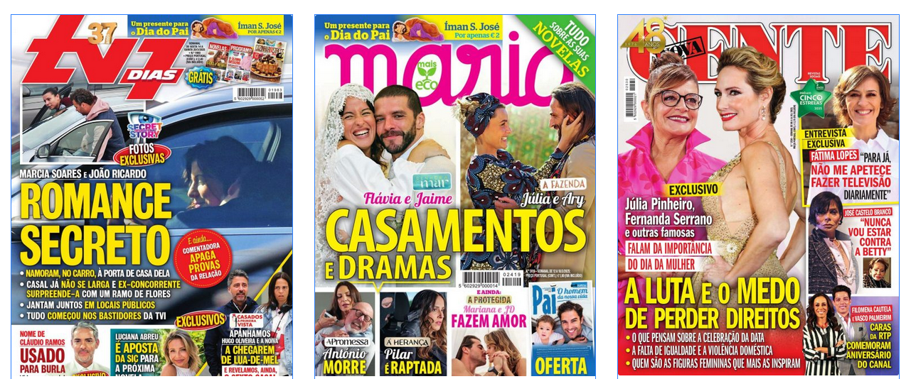
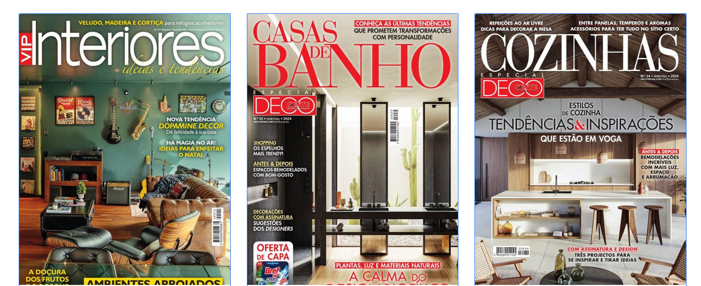
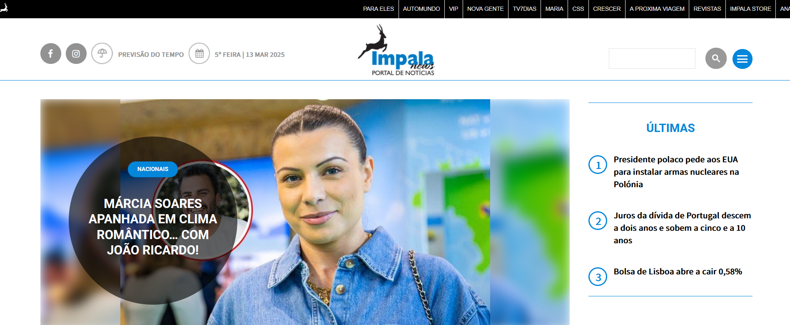
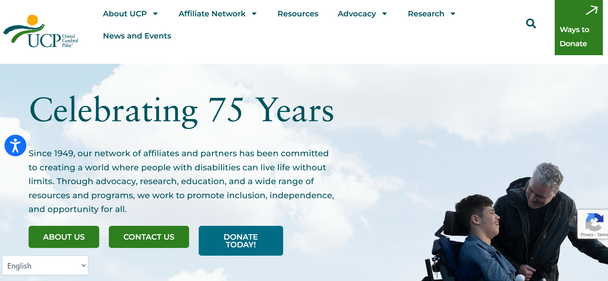

- Client:
- Several
- United Cerebral Palsy of Middle Tennessee website
- Impala publishing and news website
- Project(s):
- A diverse mix of case studies from previous experiences in the UK, Portugal, and the United States.
- Role:
- Product Designer
- Senior Designer
- UX Designer
- Web Designer
- E-Commerce
- Branding
- Book Cover Designer
- Illustration
About the project(s)
Impala Publishing: enhancing visual storytelling.
At Impala Publishing, a leading Portuguese media group, I collaborated with a dynamic team of journalists and designers to create compelling infographics and illustrations. My artwork featured in several of their well-known magazines, including:
- Para Eles - A lifestyle magazine for men, where my visuals enriched articles on contemporary topics.
- Automundo - An automotive publication, where my infographics clarified complex data on vehicle performance and industry trends.
- VIP - A celebrity and lifestyle magazine, where my illustrations brought stories about public figures and events to life.
- Nova Gente - A weekly magazine covering current affairs and entertainment, where my designs complemented in-depth articles.
- TV 7 Dias - A television guide and entertainment magazine, where my graphics engaged readers with striking visual content.
- Maria - A publication catering to a broad audience, where my creative input added vibrancy to various features.
- Crescer - A parenting and child development magazine, where my illustrations supported informative content for families.
Using Adobe Illustrator, I transformed complex data and narratives into accessible, visually appealing content, enhancing the reader experience across these diverse publications.
  Source images: Impala publishing and news website
United Cerebral Palsy of Middle Tennessee: designing impactful fundraising materials.
For United Cerebral Palsy (UCP) of Middle Tennessee, a charity supporting individuals with disabilities, I played a key role in designing marketing and branding materials to support fundraising efforts. My work was integral to promoting events such as:
- Country Music Shows and Live Telethons. Working on events that leveraged the influence of country music to raise awareness and funds, my branding materials effectively communicated UCP’s mission, inspiring generosity from attendees and viewers.
Through my creative design work, I contributed significantly to UCP’s outreach and fundraising success, supporting their mission to promote independence and full participation in society for people with disabilities.
My talent and dedication have made a lasting impact, both within the media industry through Impala Publishing and in the charitable sector through UCP of Middle Tennessee.
Source images: United Cerebral Palsy of Middle Tennessee website
Read more case studies